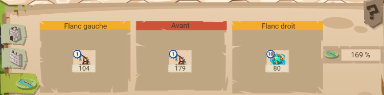
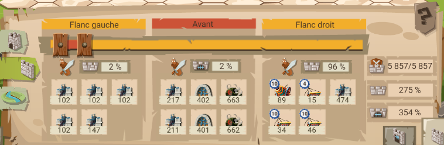
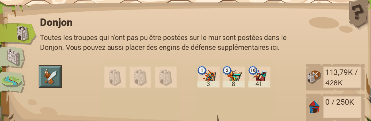
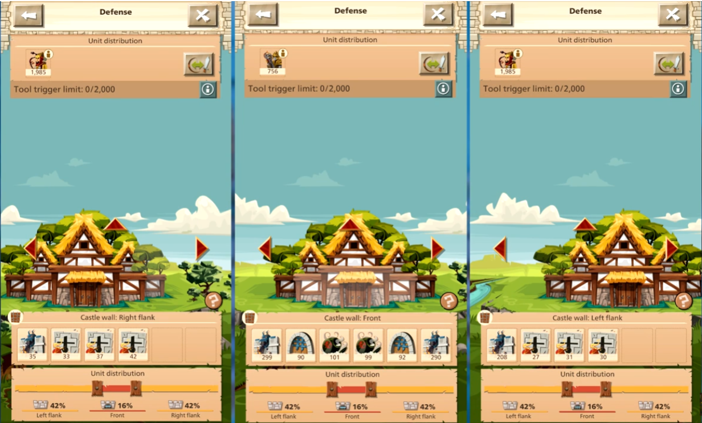
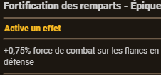

Défense
La base en pvp
Que ce soit en pvp ou pve, la défense est toujours utile. Délaisser sa défense, c'est pas loin de se mettre une cible. Il y a plusieurs façons de faire, en fonction des engins dont on dispose, du niveau des murs, douves et compétences légendaires.
Ce tutoriel présente plusieurs scémas, pour niveau 70, niveau 70 avec les engins ++ et en-dessous du niveau 70. Ce que recommande en général les grosses alliances, c'est d'avoir ce genre decdisposition sur son cp :
- 2/2/96 ou 96/2/2 selon les envies
- sur le flanc 96%, mettre en ratio 70/30 mêlée ou 30/70 mêlée
- sur le flanc 96, mettre des engins puissance de combat (bombe à chaux/meurtières)
- pour la porte, une herse suffit
- ne pas oublier les douves
Niveau 70 avec les ateliers d'engins lvl 4
Dans ce cas, mettre canon de campagne à la place des meurtrières, plaches à pointe à la place des bombes à chaux, et mines marines/trébuchets pour les douves. Pour la cour, je recommande la palissade en bois, ainsi que le piège à feu et flèches explosives/piège à lance selon affinitée.
Si la salle des légendes est assez bien montée, rechercher la compétence technophile, pour ajouter une case sur les flancs. Ci-dessous un exemple de la défense de mon cp en pvp :
Douves

Murs

Cour

Niveau 70
Garder la répartition ci-desssus, avec bombe à chaux, herse, meurtière et douves enflammées. Pour la court, il y a pas grand-chose à faire.
En-dessous du niveau 70
Garder la répartition ci-dessus, et adapter les engins. Au moins conserver le type d'effet (+force de combat).
PVE
La défense en pve est parfois assez éloignée de la défense en pvp. Sur ce coup là, la répartition est plutôt à chercher du côté de 40/20/40.
Samouraï
Le 40/20/40 est pas mal pour les cantons, le mieux est de défendre les cantons avec des soso def acheté chez le maître-forgeron. Pour optimiser les chances de succès et réduire les pertes, mettre dans les cases des murs et porte mâchicoulis et herse, sinon porte en bois et pierres.
Lorsque l'objectif est de défendre les cantons, privilégier des difficultées réduites (intermédiaire+ max). Au-delà, toute défense risque fort d'être pulvérisée par les armées provenant des châteaux de Daimyo.
Défendre un canton après avoir provoquer l'attaque est un bon moyen de gagner des médailles samouraï et points de shogun, et compléter les contrats "défense de cantons" en plus du succès. Pour plus de détail, voir ici.
Un exemple de répartition 42/16/42 de canton :

Nomades
Comme évoqué plus haut, le 40/20/40 est une bonne répartition en pve. Défendre son cp contre une attaque du khan (préalablement provoquée) permet de :
gagner des médailles du khan
Pour rappel, 1 médaille du khan = 7 points du khan
marquer des points de rage
gagner un max de récompenses durant l'event sans se ruiner avec les coffret de tablettes
L'idée est la suivante : placer les défenses habituelles en pvp, et en fonction de ce que l'on a, mettre les engins de défense "vengeance du khan" sur les murs/douves/portes. Pour ces engins, le mieux est d'en gagner avec la roue des richesses inimaginables.
Les généraux
Pour la défense, je recommande Horatio.



pomme-joyeuse - depuis le 8 juillet 2026